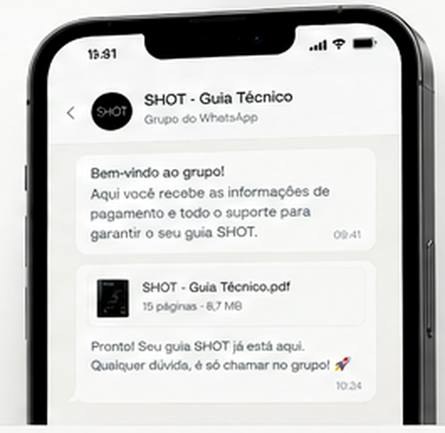

GRUPO WHATSAPP
ENTRE NO GRUPO.
RECEBA O SHOT.
É simples, rápido e seguro. Todo o processo de pagamento e envio do seu guia é feito pelo WhatsApp.
R$ 28,90
◉ ENTRAR NO GRUPO →

◉
RÁPIDO
SEGURO
PRÁTICO
RÁPIDO
SEGURO
PRÁTICO
COMO FUNCIONA
É EM 4 PASSOS.
01ENTRE NO GRUPO DO WHATSAPP
Clique no botão e entre no grupo exclusivo.
02RECEBA AS INFORMAÇÕES DE PAGAMENTO
No grupo, você receberá os dados para realizar o pagamento.
03REALIZE O PAGAMENTO
Você faz o pagamento de R$ 28,90 de forma segura e prática.
04RECEBA O PDF NO SEU WHATSAPP PRIVADO
Após a confirmação, enviamos o guia diretamente no seu WhatsApp.
IMPORTANTE
O PDF não é liberado automaticamente pelo site. Todo o processo de compra e envio é realizado pelo WhatsApp.
SHOT
O GUIA TÉCNICO
PARA QUEM QUER
IR MAIS LONGE.
O SHOT é um guia completo e prático para você entender e aplicar os principais parâmetros cinematográficos na criação de imagens e vídeos por IA.
VER O QUE VOCÊ RECEBE →
PERGUNTAS FREQUENTES
TIRE SUAS DÚVIDAS.
Sim. O SHOT é um arquivo em PDF com 15 páginas.
As informações de pagamento são enviadas no grupo do WhatsApp.
Após a confirmação do pagamento, o PDF é enviado diretamente no WhatsApp privado.
O guia foi estruturado para uso com Midjourney, Runway, Kling, Sora e Stable Diffusion.
Câmera, lente, ângulo/enquadramento, abertura, luz, combinações e catálogo de prompts.
SHOT · GUIA TÉCNICO
PRONTO PARA
RECEBER O SHOT?
Entre no grupo do WhatsApp e siga os próximos passos.